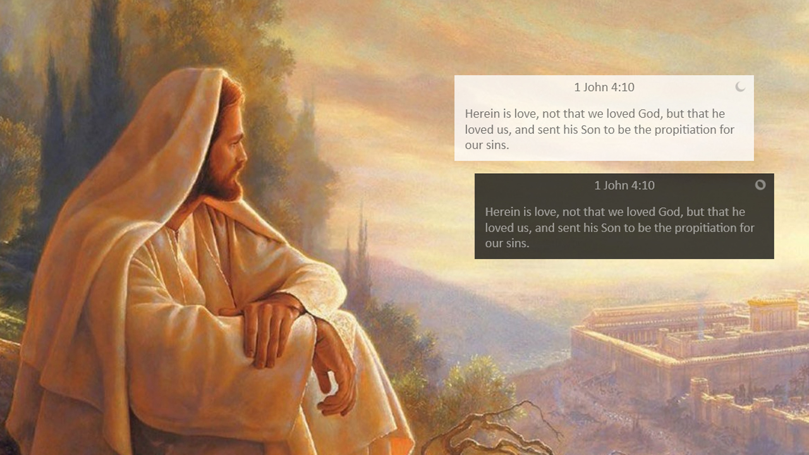
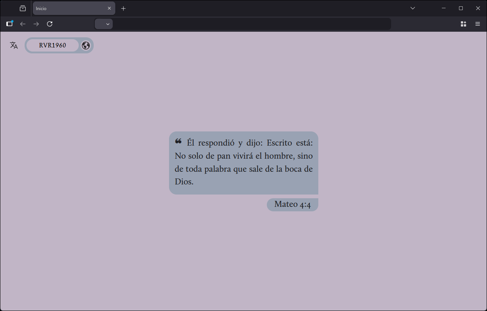
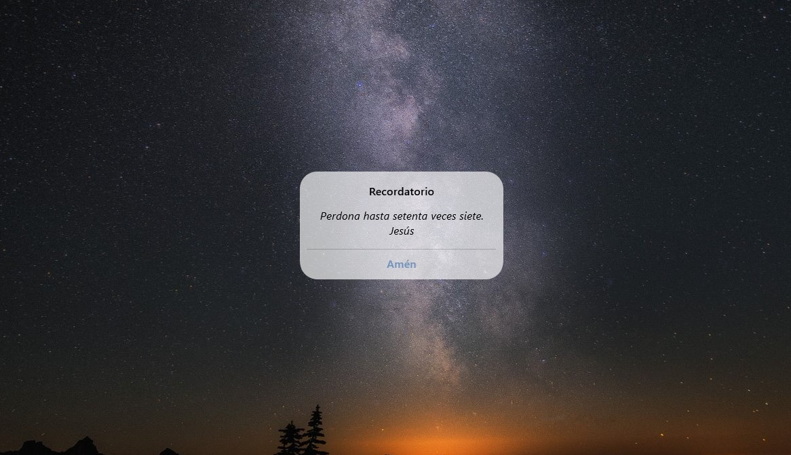
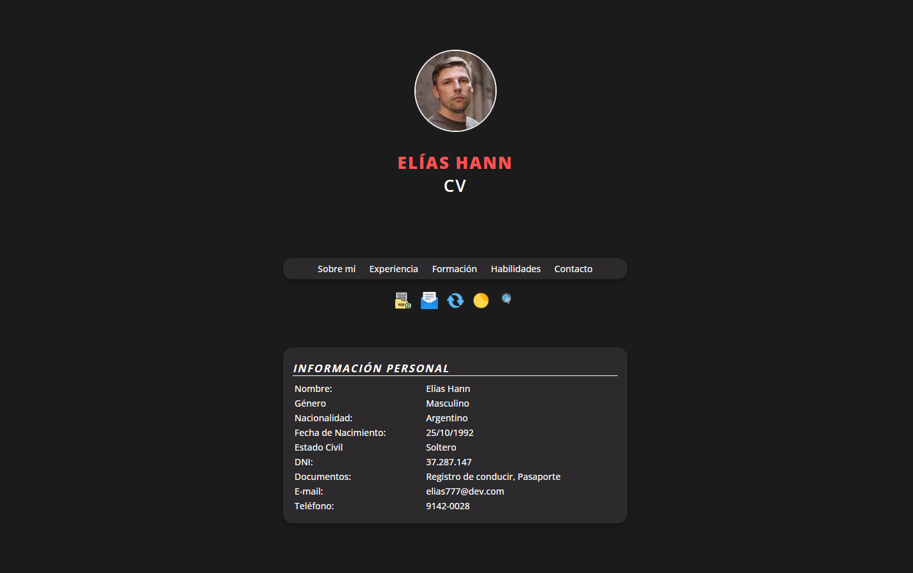
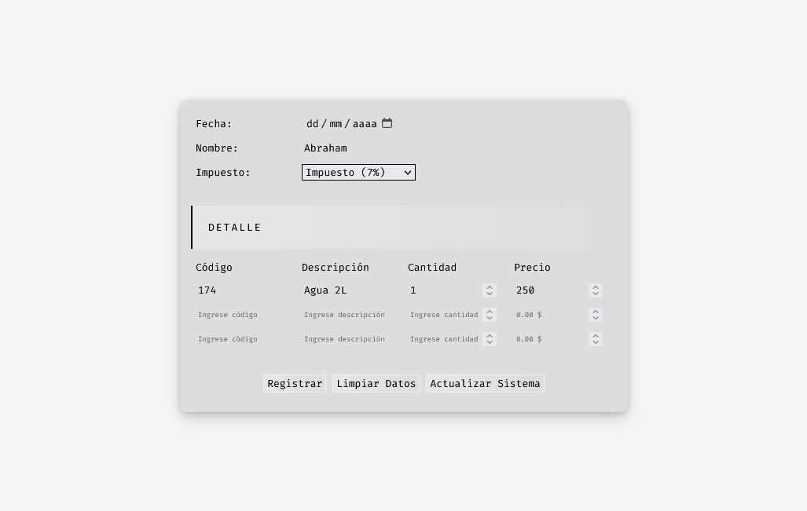

d8888 8888888b. .d8888b. d8888 888b 888
d88888 888 Y88b d88P Y88b d88888 8888b 888
d88P888 888 888 888 888 d88P888 88888b 888
d88P 888 888 d88P 888 d88P 888 888Y88b 888
d88P 888 8888888P" 888 d88P 888 888 Y88b888
d88P 888 888 T88b 888 888 d88P 888 888 Y88888
d8888888888 888 T88b Y88b d88P d8888888888 888 Y8888
d88P 888 888 T88b "Y8888P" d88P 888 888 Y888
x4mw
Rainmeter | Versículo Del Día

¡Lee el Versículo Bíblico del Día en tu escritorio!
Viene con ocho diseños y la posibilidad de cambiar la versión de la Biblia.
Requiere Rainmeter - un software de código abierto que te permite utilizar skins personalizables en el escritorio.
Lenguajes:
- Lua
Cantidad de descargas:
- Versión en Español: +1658
- Versión en Inglés: +3251
Startpage | Versículo del Día

¡Lee el Versículo Bíblico del Día al abrir tu navegador de internet!
Esta edición permite cambiar la versión de la Biblia y copiar el pasaje al portapapeles.
Proveedor del Versículo del Día: BibleGateway.com
Compatible con Firefox y Chrome.
Reemplaza la página de inicio de tu navegador.
Lenguaje:
- HTML
- CSS
- JavaScript
Rainmeter | Fotos Polaroid

Visualiza fotos al estilo Polaroid en tu escritorio de Windows.
Viene con tres diseños de papel: Wide, i-Type y Go - Y varias funciones como añadir texto, cambiar el tinte del papel y de la fotografía.
Requiere Rainmeter - un software de código abierto que te permite utilizar skins personalizables en el escritorio.
Lenguajes:
- Lua
Rainmeter | Recordatorio

Visualiza aleatoriamente versículos bíblicos, mensajes y reflexiones cristianas con el fin de recordar lo que eres en Dios y para Dios. Ambientado en el diseño de iOS Reminder, para escritorios de Windows.
Requiere Rainmeter - un software de código abierto que te permite utilizar skins personalizables en el escritorio.
Lenguaje:
- Lua
Proyecto | Currículum Vitae

Proyecto Final para la materia Primeros pasos para el desarrollo Front End.
El proyecto consitió en imaginar que era un desarrollador recién incorporado en un nuevo emprendimiento tecnológico, y que mi primer tarea en la empresa era realizar una página web que posea un currículum vitae.
Lenguajes:
- HTML
- CSS
- JavaScript
Proyecto Tienda | HTML & PHP

Trabajo práctico para la materia Conceptos de Desarrollo de Software de la carrera de Ciberseguridad. Tuvimos que crear una tienda con la capacidad de registrar productos y aplicarles impuestos.
Lenguajes:
- HTML
- CSS
- PHP
- JavaScript